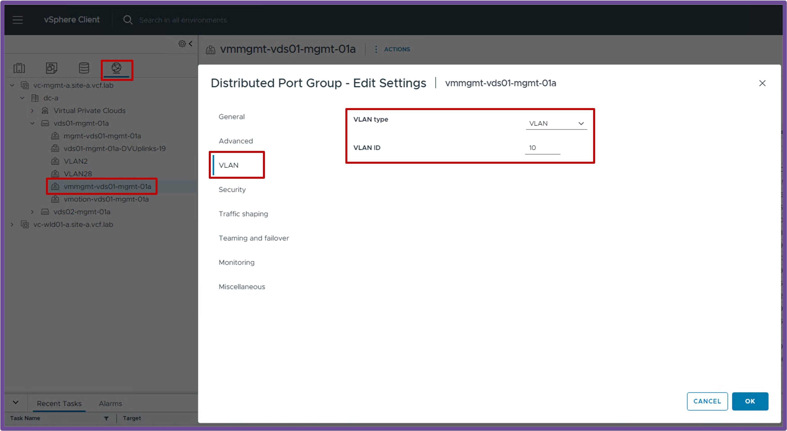
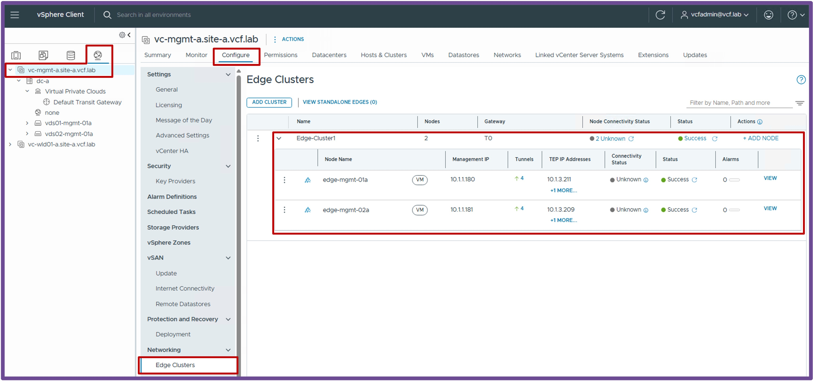
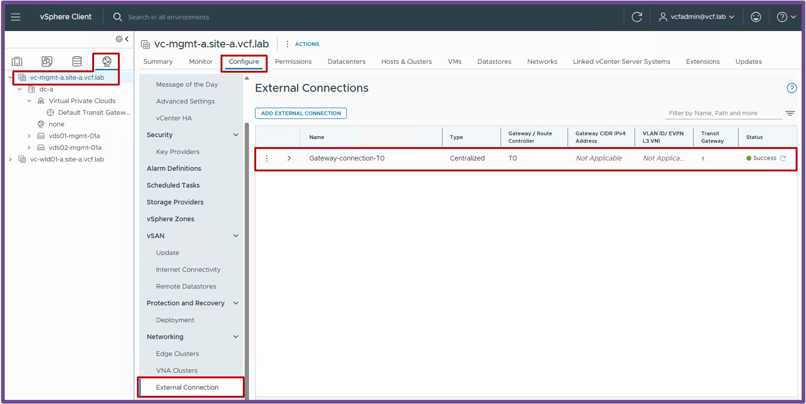
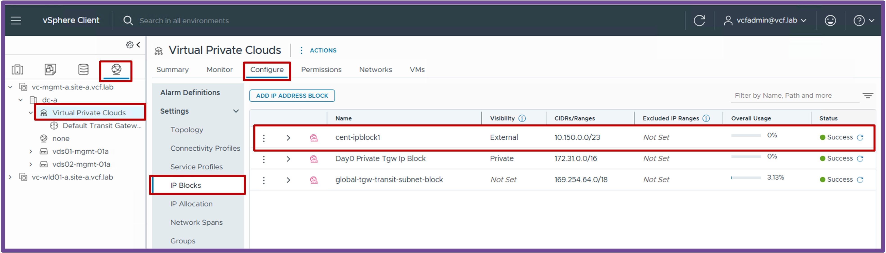
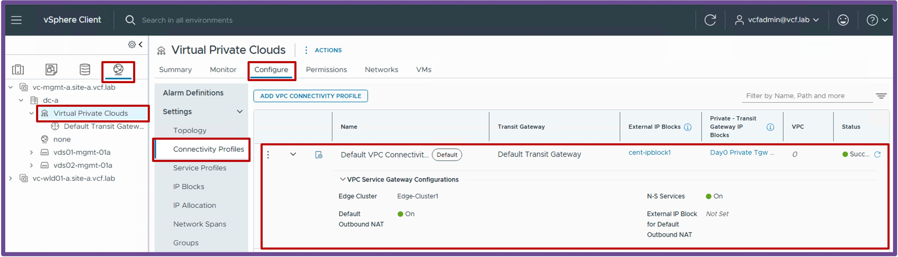
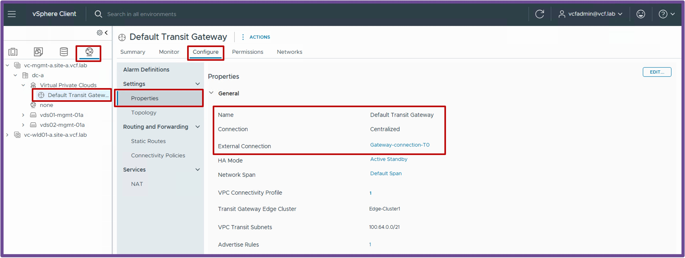
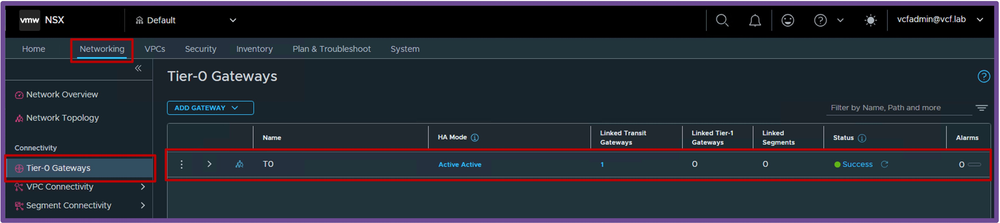

Supervisor with "NSX + CTGW/Edge/T0"
{kind=link}
This section describes the requirements for deploying the Supervisor utilizing an "NSX + CTGW/Edge/T0" architecture inside a vSphere environment.
- Requirements
- Install Requirements
{kind=link}
Requirements
Supervisor with "NSX + CTGW/Edge/T0" has the following networking requirements:
{kind=link}
Physical Fabric
1 Subnet/VLAN
- Management:
Can be an existing Management subnet/VLAN that already hosts other components (such as vCenter).
Requires 5 consecutive IPs (for the Supervisor Cluster).
BGP Dynamic Routing Protocol
- BGP configured between the physical routers and T0 with:
- The physical routers advertising themself as default gateway to the T0
- The T0 advertising the future VPC Subnets public, VIP and NAT
vCenter
VDS Port Group
-
Management:
VDS Port Group VLAN for the Management traffic.Status Validation
Navigate to vCenter > Networking > VDS-PortGroup > Edit Settings > VLAN.
Ensure the VLAN Type is "VLAN" with the right "VLAN ID":
{kind=link}
NSX
Missing NSX Requirements?
If your environment is not yet configured with the NSX prerequisites below, please refer to:
vCenter Cluster "VCF Networking ready (NSX Overlay)"
-
vCenter Cluster with NSX Prepared
The vCenter Cluster must be prepared for VCF Networking so the future Supervisor Cluster can connect to the VPC.Status Validation
Navigate to vCenter > Host and Clusters > [your vCenter Cluster] > Configure > Networking > Network Configuration.
Ensure "Cluster Status" and "Host Status" are "Green", and ESX have at least 1 TEP IP Address:Note: If no workloads have been deployed on logical networks yet, it is normal to have zero tunnels established on the ESX hosts.
{kind=link}
vCenter with "CTGW + Edge + T0 ready"
-
Edge Cluster
The Edge Cluster hosts the Load Balancing and Outbound-NAT services (providing NAT for Supervisor / K8s Clusters communicating with the physical network).Status Validation
Navigate to vCenter > Networking > vCenter > Configure > Networking > Edge Clusters.
Ensure the Edge Cluster with its Nodes is deployed and shows a Green status.
-
Centralized External Connection
A Centralized External Connection is the VLAN and physical router used by logical networks (such as Transit Gateways and VPCs) to connect to the physical network.Status Validation
Navigate to vCenter > Networking > vCenter > Configure > Networking > External Connection.
Ensure you have at least 1 Centralized External Connection configured:
-
IP Blocks
The External IP Block is for the future K8s VIPs, VPC Outbound-NAT, and VPC Public Subnet (IP Block is the full Dataplane subnet or part of it).Status Validation
Navigate to vCenter > Networking > Virtual Private Clouds > Configure > Settings > IP Blocks.
Ensure you have at least 1 External IP Block configured:
-
Connectivity Profile
The Connectivity Profile binds the CTGW configuration (Edge Cluster, Outbound-NAT, and N-S Services for Load Balancing).Status Validation
Navigate to vCenter > Networking > Virtual Private Clouds > Configure > Settings > Connectivity Profiles.
Ensure the Connectivity Profile has the following configured:- External and Private Transit Gateway IP Blocks selected
- An Edge Cluster selected
- N-S Services enabled (for the LB service)
- Default Outbound NAT enabled (for NAT)

-
Centralized Transit Gateway (CTGW)
The Centralized Transit Gateway is the Centralized logical router responsible for routing traffic between the VPC(s) and Tier-0.Status Validation
Navigate to vCenter > Networking > Default Transit Gateway > Configure > Settings > Properties.
Ensure the CTGW has a Connection Type of "Centralized", and an External Connection configured.
-
Tier-0 (T0)
The Tier-0 is the logical router responsible for routing traffic between the logical and physical networks.Status Validation
The T0 status is only available from NSX.
Navigate to NSX > Networking > Tier-0 Gateways.
Ensure the T0 has a Green status and no Alarms.
{kind=link}
{kind=link}
{kind=link}
{kind=link}
{kind=link}
{kind=link}